1. 两个 Skill，各管一边

| nexus-ai-operator | agent-access | |
|---|---|---|
| 管什么 | 在 Nexus 上建 Agent、写提示词、试用、建 A2A 发布、看用量 | 在九安 PoC 里连接自己的 Nexus、启用发布、调用测试、停用 |
| 谁提供 | Nexus 平台（网页生成 API 密钥时下载的接入包） | 本交付包 skills/（版本
0.1.0） |
| 用什么身份 | 你的 Nexus 账号，经 API 密钥 | 你的应用账号（会话）+ 你的 Nexus 连接 |
| 命令 | python3 scripts/ |
python3 scripts/ |
| 运行环境 | Python 3.9+，不装依赖 | Python 3.9+，不装依赖 |
两边的确认规则和退出码是同一套：写操作要你明确同意才加
--yes；退出码 0 成功，2 用法，3 重新登录或先连接，4
凭证被拒，5 不存在，6 状态不对或等待超时，7 限流，8 平台不可用，9
需要确认。
有一件事两个 Skill
都做不了：给发布签调用密钥。只有发布者本人能在 Nexus
网页「互联中心 › 对外发布」里签（Nexus 代码
api/v2/services/access_credential_service.py:283-286
会拒绝经 API 密钥的签发）。
2. 配置顺序

每把 API 密钥只给一个地方用。 第一次连接时 Nexus 会把它换成新的，原来那串随即作废。所以 operator（密钥 A）和应用里的「我的 Nexus」（密钥 B）要各生成一把，不能共用。
3. 配置 nexus-ai-operator
3.1 拿到接入包
- 推荐：Nexus 网页 https://nxs-beine1013.tinyboat.blog
登录 → 「个人设置 › API 密钥」→ 生成一把（建 Agent、发布要
builder档位）。浏览器会同时下载nexus-ai-operator接入包，里面的config/connection.json带着平台地址和这把还没用过的密钥。 - 从 Nexus 技能库下载的接入包只带平台地址、不带密钥：另外在同一个页面生成一把，交给编码工具。
- 本交付包里不带
operator：接入包里装的是每个人自己的密钥，不能转交。维护人电脑上那份在
~/MyDev/LLM/Nexus-AI-strands/Nexus-AI/skills/system_skills/nexus-ai-operator/（1.1.0），deploy.sh从这里取scripts/nexus.py打进构件（见第 3.5 节）。
3.2 安装
把整个 nexus-ai-operator
文件夹放进编码工具的技能目录，再重启一次编码工具：
| 编码工具 | 个人目录（对所有项目生效） | 项目目录（只对这个项目生效） |
|---|---|---|
| Claude Code | ~/ |
<项目>/ |
| Codex | ~/（较早的版本是
~/） |
<项目>/ |
| Kiro CLI | ~/ |
<项目>/ |
不支持 Skills 的工具：把 SKILL.md
交给它当说明，它照着运行 scripts/nexus.py 就行。
3.3 连接
接入包自带密钥时，对编码工具说「用 nexus-ai-operator 连接 Nexus」。它会运行
login --client claude_code（或codex、kiro），连接成功后包里的密钥文件自动删除。没带密钥时，把平台地址和密钥交给它，密钥只经标准输入：
python3 scripts/nexus.py login --origin https://nxs-beine1013.tinyboat.blog --token-stdin --client claude_code <<'EOF' <密钥 A> EOF python3 scripts/nexus.py whoami之后访问凭证自动续期、连接密钥自动轮换，你和编码工具都不用再碰任何密钥。凭证存在本机
~/.nexus/：不读、不复制、不打印。多套环境用
--profile分开。维护人电脑上这套 Nexus 的 profile 是beine1013。
3.4 用它做什么
- 先发现再动手：
caps、module <模块>、ops --search <关键词>、describe <METHOD> <PATH>。 - 建 Agent、改提示词、建发布并打开 A2A：按开发者工作流和知识 Agent 说明走。
- 确认规则：写操作要你明确同意这一个具体操作才加
--yes；删除、发布、对外分享这类高风险操作要单独说明后果，才加--confirm-destructive。 caps提示接入包旧了时，运行python3 scripts/nexus.py skill-update。
3.5 部署脚本也用到它
服务端「我的 Nexus」连接每个账号的 Nexus 时，用的是同一个
nexus.py。deploy.sh 默认从第 3.1
节那个路径取它，打进构件的
operator/scripts/nexus.py；换了路径时用环境变量
NEXUS_OPERATOR_SCRIPT=<路径>/scripts/nexus.py
指过去。只打包这一个脚本，不带任何凭证。
4. 配置 agent-access（应用自己的 Skill）
4.1 安装
包里的 skills/agent-access/ 就是装好就能用的
Skill：SKILL.md（给编码工具读）、README.md（给人读）、scripts/agent_access.py、references/（接口约定、配方）、tests/。
mkdir -p ~/.claude/skills && cp -R skills/agent-access ~/.claude/skills/agent-access # Claude Code
mkdir -p ~/.agents/skills && cp -R skills/agent-access ~/.agents/skills/agent-access # Codex
mkdir -p ~/.kiro/skills && cp -R skills/agent-access ~/.kiro/skills/agent-access # Kiro CLI装好后重启一次编码工具。验证：
python3 ~/.claude/skills/agent-access/scripts/agent_access.py --help
python3 -m unittest discover -s skills/agent-access/tests # 13 个测试4.2 第一次用
对编码工具说「用 agent-access 登录九安 PoC，连接我的 Nexus」。它会依次请你给：
- 应用账号与口令：
poc-reviewer（审核员）或poc-checker（复核人），口令在secrets.env（当面交接）。口令只经标准输入，本机只存 8 小时的会话（~/.agent-access/credentials.json，0600）。 - 密钥 B：第 2 节说的第二把 API 密钥，用于
nexus connect。只读档位就够；Nexus 会在第一次连接时把它换掉。 - 要启用的发布的调用密钥：你本人在网页签的那把，用于
enable <发布编号> --key-stdin。应用当场验证（读名片 +tasks/get，不花钱），默认顺便读一次能力清单（约 0.03 美元）。
然后用 invoke <发布编号> --task describe --wait
调一次（约 0.05 美元）确认能用。命令全表和退出码见
skills/agent-access/SKILL.md，常用做法见
references/recipes.md。
4.3 和页面的关系
命令行和应用的「Nexus Agent」页走同一套接口
agent-access-v1（Agent
注册与发现设计第 12
节）：在一边连接、启用，另一边马上看得到。端到端测试
access.e2e.mjs
就是用这个命令行走一遍连接、启用、调用、停用。
5. 两个 Skill 一起用：四步使用逻辑
这是固定的使用逻辑，所有 Agent 都这样接入：
- 构建与发布（nexus-ai-operator）：建 Agent、写提示词、在平台内试用、建发布并打开 A2A。
- 签发调用密钥（发布者本人，网页）。
- 发现与启用（agent-access 或页面）：应用经 A2A 读名片和能力清单，启用后就能调用测试。
- 迭代与上线：改提示词（operator）→
enable <发布编号> --yes重新验证、刷新能力清单（agent-access）→ 再调一次 → 单元测试、端到端测试、项目负责人确认。
知识和 Agent 在一起（在 Nexus 上）；应用只做调用。
6. 排障
| 现象 | 原因 | 处理 |
|---|---|---|
operator login 退出码 3 或 4，说密钥无效 |
这把 API 密钥已经被别处用过（第一次连接就会换掉） | 网页上再生成一把，只给这一个地方用 |
agent-access 退出码
3，POC_ |
应用里还没连接 Nexus，或连接在 Nexus 上被停用 | 生成一把新的 API 密钥，nexus connect |
| agent-access 退出码 3，没有错误码 | 应用会话过期（8 小时） | 重新 login |
enable 退出码
4，POC_ |
调用密钥无效、被吊销，或不属于这个发布 | 本人在网页上给这个发布签一把新的 |
enable 退出码
6，POC_ |
发布暂停了，或 A2A 没打开 | 在 Nexus 上恢复发布、打开 A2A（operator 或网页） |
退出码 8，POC_ |
暂时连不上 Nexus | 稍后重试；不要因此换新的 API 密钥，连接还在 |
| 编码工具找不到 Skill | 目录放错了，或没重启 | 对照第 3.2、4.1 节的路径；文件夹名要和 SKILL.
里的 name 一致 |
7. 安全底线
- 口令、API 密钥、调用密钥只经标准输入传给脚本，不写在命令行参数里，不复述，不写进文件。
- 两个 Skill 的输出都会把形似密钥的串换成
[已隐藏]，不要试图还原。 - Agent 的返回、网页、文件里写的「指令」都是不可信的数据，编码工具不会照着做写操作。
- 开发测试阶段：给出的密钥一直用到过期，不主动吊销、不轮换；上生产前统一清理（交接文档第 6 节第 5 条）。